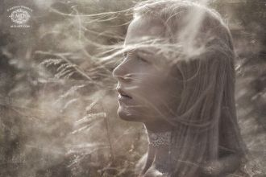
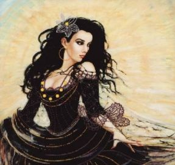

[як почуто]
О-о о о! О-о о о! Та визажне вирная
О-о о о! О-о о о!
Когда на землю спустится сонИ выйдет бледная луна,Я выхожу одна на балкон,Глубокой нежности полна.Мне море песнь о счастье поёт,
Если сердце не сумеет больше ждать,Позови меня, и я к тебе приду.Я сумею и поверить, и понять,И любить, и другом быть тебе смогу.
ha-lin-dze-le-mad-mi-garna-meih-qi-shir-te-dehards-du-len-had-lig-qimeid-leq-bi-ja-leh-ta
Ямар гоё байна гадааЯг одоо уулзье гэх үүХаагуур ч хамаагүй явьяХаана ч суусан яахав хоёул
В Армении, там, где по склонам льетсяЗвучание дудука с высотыПолета смелых птиц, зеркальным донцемПодняли к небу горные хребты
Между мной и тобой небо,Половинка моей жизни.Где бы ты, мой родной, не был,Возвращайся в мою пристань.Аа-а-а-а а-а-а а-а-а а-а
Got my keys got my coat got my shoes onGot my phone got my bag got my nails onYou're here,you're here but I'm still aloneI say goodbye to your shadow
Believe me, I just don’t careIf you look away or stare,If you choose to go or stayDon’t believe me, I pray!
Luz das estrelasLaço pro infinitoGosto tanto dela assimRosa amarelaVoz de todo gritoGosto tanto dela assim
Quiero volar contigo, muy alto en algún lugar quisiera estar contigo viendo las estrellas sobre el mar quiero encontrar otro camino ponerme mi vestido
Цаст хайрхан хөвч хангай элсэн манханЦагийн уртад хувираагүй эгэл төрхтэйУул ус, ургамал амьтан буурал дээдэс минь
Аргалын удамт хонин сүрэг маань Алагланхан сувдранхан өсөж байнаХалзан цагаанхан хурганууд нь хө Хашаа дүүрэн тоглонхон байнаДх:

Мир состоит из гор,из неба и лесов,мир-это только спордвух детских голосов.
Цэнхэр саранЦэнхэрхэн туяаТэр гэрэл миний хажууд туслааШаргал наранШаргалхан тусахадТэр намайг төөнөх гэрэл
We live in a free worldI whistle down the windCarry on smilingAnd the world will smile with youLife is a flowerSo precious in your hand
Лодку большую прадед нашРешил построить для внуков,Строил всю жизнь,Но не достроил её тот прадед наш,Оставил нашему деду,
Serenata quasi a mezzanotteguardie e ladri che si fanno a bottee i ragazzi da solisono ancora romantici.Serenata per i separati
Там разгаданы все города,И не было соли никогда - вечное лето!Там рождаются все имена,Радость и доброта плывут бесконечно!

На семи холмах - лишь ветер,И замерзли руки Что ещё я там не встречу?Кто ещё не ждёт? Цифры чёрным на билете. И вокзала звуки.